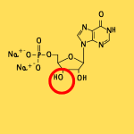

Score: 0 / 0
Transcription
Transcription is the process of synthesizing
RNA from a DNA template. It occurs in the
nucleus of eukaryotic cells and in the cytoplasm of prokaryotic cells. The
main steps include:
-
Initiation: RNA polymerase binds to
the
promoter
region of the gene, unwinding the DNA double helix.
-
Elongation: RNA polymerase
synthesizes a single-stranded RNA molecule by adding ribonucleotides
complementary to the DNA template strand.
-
Termination: RNA polymerase reaches
a termination signal, causing it to detach from the DNA and release the
newly synthesized RNA molecule.
Transcription occurs in the 5' to 3' direction, meaning RNA nucleotides
are added to the 3' end of the growing RNA strand.

Transcription occurs in the
nucleus
of eukaryotic cells, where the DNA is located, and in the
cytoplasm
of prokaryotic cells, where DNA is not compartmentalized.